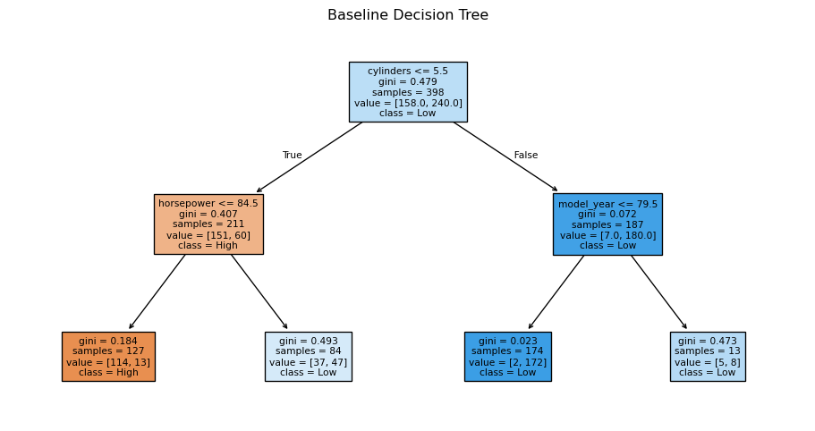
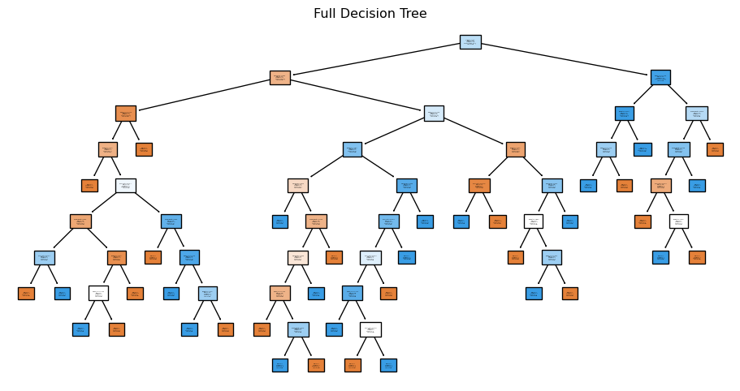
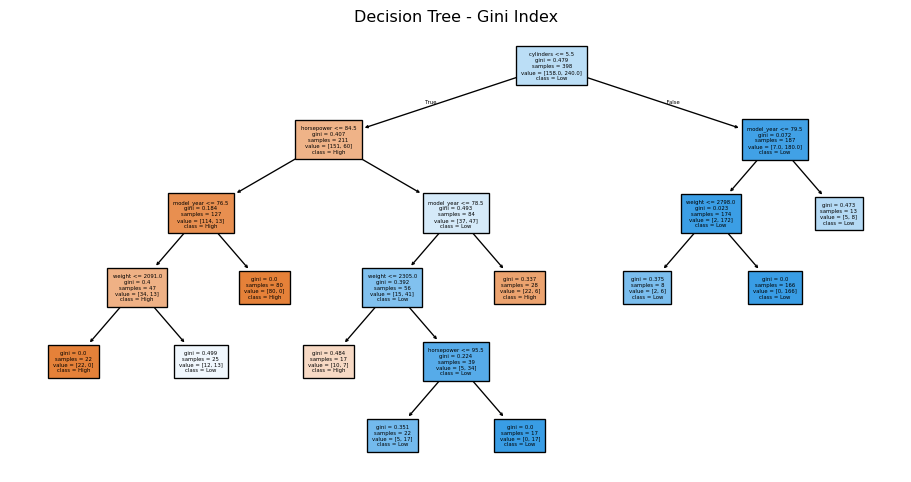
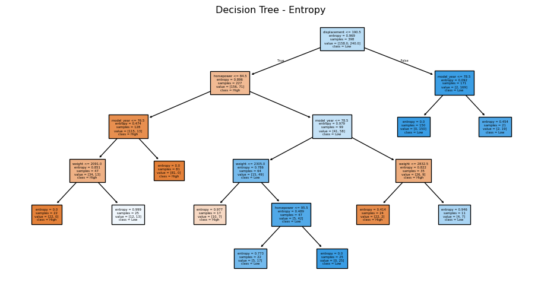

# Import required libraries
import numpy as np
import pandas as pd
#import matplotlib.pyplot as plt
import seaborn as sns7 Decision Tree for Classification
WVU BUDA 450
8 Overview
Tree-based methods partition the feature (e.g., input) space into a series of decision segments, which has the added benefit of being easy to understand. Think of it as a flow chart for making decisions. The viewer of the chart is presented with a diagram that offers outcomes in response to (yes / no) questions (decisions) about important predictors found in the data set.
This chapter covers decision trees for classification and regression and discusses how models are built and evaluated.
“This session provides a guide for classification with decision trees in R. Using R packages, decision trees are built from a baseline to other models, exploring model parameters and hyperparameters, and different impurity measures for splitting rules. This session explains how to grow a full decision tree, prune it, and predict unseen data using the trained model.”
8.0.0.1 Packages for this class
rpartfor models based on the recursive partitioning, which follows largely CART and uses the Gini index to make splitting decisions and early stopping (also called pre-pruning).tibble,dplyrscalesordatawizardfor rescaling
9 Data
For the example in this section, we will use a car dataset to illustrate decision tree classification. In R, the car.test.frame dataset from the rpart package contains 60 records of various car makes, originally reported in Consumer Reports (April 1990) 1. Here, we will use a similar dataset in Python for training a classification model.
Let’s load the mpg data from seaborn package as it relates to predicting the mileage of cars, which consists of 60 records of makes of cars taken from the Consumer Reports (April, 1990) [^det1]. This data will be used as a training data set to build decision tree models.
X is the feature matrix with 392 auto samples as rows and 8 feature columns (6 rows with NaNs removed). y is a 1-dimensional array of the target MPG values.
The goal is to predict whether a car’s mileage is “High” or “Low”, with a threshold of 25 miles per gallon (MPG).
# Load and preview the data
df = sns.load_dataset("mpg")
df.head()| mpg | cylinders | displacement | horsepower | weight | acceleration | model_year | origin | name | |
|---|---|---|---|---|---|---|---|---|---|
| 0 | 18.0 | 8 | 307.0 | 130.0 | 3504 | 12.0 | 70 | usa | chevrolet chevelle malibu |
| 1 | 15.0 | 8 | 350.0 | 165.0 | 3693 | 11.5 | 70 | usa | buick skylark 320 |
| 2 | 18.0 | 8 | 318.0 | 150.0 | 3436 | 11.0 | 70 | usa | plymouth satellite |
| 3 | 16.0 | 8 | 304.0 | 150.0 | 3433 | 12.0 | 70 | usa | amc rebel sst |
| 4 | 17.0 | 8 | 302.0 | 140.0 | 3449 | 10.5 | 70 | usa | ford torino |
9.0.0.1 Preprocessing
To formulate it as a classification problem, let’s convert the numeric mpg into a categorical variable with two classes: High for mpg > 25, and Low otherwise.
# Convert mpg to categorical: 'High' if > 25
df['mpg'] = df['mpg'].apply(lambda x: 'High' if x > 25 else 'Low').astype('category')
# Transform the origin into a numerical variable
df['origin'] = df['origin'].apply(lambda x: 1 if x == "usa" else 0)For classification tasks using decision trees and many other models, it is important to explicitly encode categorical labels. We’ll use astype('category') to ensure the transformed variables are interpreted nominally.
df['mpg'] = df['mpg'].astype('category')
#df['origin'] = df['origin'].astype('category')
df.dtypesmpg category
cylinders int64
displacement float64
horsepower float64
weight int64
acceleration float64
model_year int64
origin int64
name object
dtype: objectdf = df.drop(['name'], axis=1)
df| mpg | cylinders | displacement | horsepower | weight | acceleration | model_year | origin | |
|---|---|---|---|---|---|---|---|---|
| 0 | Low | 8 | 307.0 | 130.0 | 3504 | 12.0 | 70 | 1 |
| 1 | Low | 8 | 350.0 | 165.0 | 3693 | 11.5 | 70 | 1 |
| 2 | Low | 8 | 318.0 | 150.0 | 3436 | 11.0 | 70 | 1 |
| 3 | Low | 8 | 304.0 | 150.0 | 3433 | 12.0 | 70 | 1 |
| 4 | Low | 8 | 302.0 | 140.0 | 3449 | 10.5 | 70 | 1 |
| ... | ... | ... | ... | ... | ... | ... | ... | ... |
| 393 | High | 4 | 140.0 | 86.0 | 2790 | 15.6 | 82 | 1 |
| 394 | High | 4 | 97.0 | 52.0 | 2130 | 24.6 | 82 | 0 |
| 395 | High | 4 | 135.0 | 84.0 | 2295 | 11.6 | 82 | 1 |
| 396 | High | 4 | 120.0 | 79.0 | 2625 | 18.6 | 82 | 1 |
| 397 | High | 4 | 119.0 | 82.0 | 2720 | 19.4 | 82 | 1 |
398 rows × 8 columns
X, y = df.drop(['mpg'], axis=1), df[['mpg']]10 Decision Tree for Classification
10.1 Simple Model building
Let’s create a baseline decision tree (DT) model for classification, using DecisionTreeClassifier() function in rpart package with class for method and default settings for the rest[^det2]:
from sklearn import tree
# Train baseline decision tree
clf_base = tree.DecisionTreeClassifier(
max_depth=2,
random_state=1
)https://scikit-learn.org/stable/modules/generated/sklearn.tree.DecisionTreeClassifier.html
The displayed information from the object base_DT of class rpart shows a simple version of the model training result. For more detailed summary of the training result, you can use summary() function:
clf_base.fit(X, y)DecisionTreeClassifier(max_depth=2, random_state=1)In a Jupyter environment, please rerun this cell to show the HTML representation or trust the notebook.
On GitHub, the HTML representation is unable to render, please try loading this page with nbviewer.org.
DecisionTreeClassifier(max_depth=2, random_state=1)
By using attbiutes() function on the resulted tree, a list of available data attributed to the tree[^det5] can be called. To access/retrieve such attributed result, $ operator can be used.
clf_base_rules = tree.export_text(clf_base)
print(clf_base_rules)|--- feature_0 <= 5.50
| |--- feature_2 <= 84.50
| | |--- class: High
| |--- feature_2 > 84.50
| | |--- class: Low
|--- feature_0 > 5.50
| |--- feature_5 <= 79.50
| | |--- class: Low
| |--- feature_5 > 79.50
| | |--- class: Low
The preceding commands will extract the predictor (X) and target class (Y) attributes from the vertebrate dataset and create a decision tree classifier object using entropy as its impurity measure for splitting criterion. The decision tree class in Python sklearn library also supports using ‘gini’ as impurity measure. The classifier above is also constrained to generate trees with a maximum depth equals to 3. Next, the classifier is trained on the labeled data using the fit() function.
There is a useful function to visualize the built DT, rpart.plot() function in rpart.plot package1. Using different values for arguments type and extra, a different plot can created for the trained DT.
import matplotlib.pyplot as plt
from sklearn.tree import plot_tree
# Visualize the tree
plt.figure(figsize=(12, 6))
plot_tree(
clf_base,
feature_names=X.columns,
class_names=y['mpg'].cat.categories, # class_names=label_encoders['mpg'].classes_,
proportion=False,
filled=True,
fontsize=8
)
plt.title("Baseline Decision Tree")
plt.show()
10.2 Full tree and pruning
Now, let’s build another DT, allowing the model to be fully grown, with additional arguments for rpart().
cpis a tree complexity parameter.- With
cp=1, a tree will always have no split. - With
cp=0, a tree will fully grow until no more split needs
- With
minsplitis the minimum number of observations (i.e., records) in a node to be attempted to be splitminbucketis the minimum number of observations that any leaf node should have at least
# Train full tree with no pruning (min_samples_split=2, min_samples_leaf=1)
clf_full = tree.DecisionTreeClassifier(
min_samples_split=2,
min_samples_leaf=1,
ccp_alpha=0,
random_state=1,
)
clf_full.fit(X, y)DecisionTreeClassifier(ccp_alpha=0, random_state=1)In a Jupyter environment, please rerun this cell to show the HTML representation or trust the notebook.
On GitHub, the HTML representation is unable to render, please try loading this page with nbviewer.org.
DecisionTreeClassifier(ccp_alpha=0, random_state=1)
# Visualize the tree
plt.figure(figsize=(12, 6))
plot_tree(
clf_full,
feature_names=X.columns,
class_names=y['mpg'].cat.categories, # class_names=label_encoders['mpg'].classes_,
proportion=False,
filled=True,
fontsize=1
)
plt.title("Full Decision Tree")
plt.show()
10.2.0.1 Impurity measure for spliting rules
So far we have built DTs, minimizing impurity based on “Gini index” as the defaults in rpart(). The other measure “information” that is based on entropy and so information gain can be used in rpart(). Let’s train two models that use a different splitting criterion (“gini” and “information”) and then see the resulted tree test. For this, an additional argument parms is needed with a named list that contains values of different parameters to influence how the model is trained. As shown below, the two models resulted in different rules.
# Comparison of split criteria: gini
clf_gini = tree.DecisionTreeClassifier(
criterion="gini",
min_samples_split=32,
min_samples_leaf=8,
)
clf_gini.fit(X, y)
plt.figure(figsize=(12, 6))
plot_tree(
clf_gini,
feature_names=X.columns,
class_names=y['mpg'].cat.categories, # class_names=label_encoders['mpg'].classes_,
proportion=False,
filled=True,
fontsize=4
)
plt.title("Decision Tree - Gini Index")
plt.show()
# Comparison of split criteria: entropy
clf_entropy = tree.DecisionTreeClassifier(
criterion="entropy",
min_samples_split=32,
min_samples_leaf=8,
)
clf_entropy.fit(X, y)
plt.figure(figsize=(12, 6))
plot_tree(
clf_entropy,
feature_names=X.columns,
class_names=y['mpg'].cat.categories, # class_names=label_encoders['mpg'].classes_,
proportion=False,
filled=True,
fontsize=4
)
plt.title("Decision Tree - Entropy")
plt.show()
Model Parameters vs Hyperparameters
There are two types of parameters in many (nowadays most of ) data mining models.
Model parameters (often called just parameters) are the things/values/rules that are internally determined by the learning algorithm through the induction (model training) process. For example, slope and intercept coefficients in a linear model, the numbers of splits and leaf nodes in a decision tree, etc.
Hyper parameters (sometimes called meta parameters) are the things/values/configurations that control the induction (model training) process, which need to be externally determined by additional procedures, some heuristics, or manually analysts before getting a result from the model. For example, the arguments of
rpart()such ascp,minsplit,minbucketfor a DT model building process, as well as the splitting criterion.
Typically, most modeling functions (not only in R but also in many others) have some predetermined defaults for such hyperparameters because some effort is required to set such values. Of course, this does not imply that the defaults are appropriate for any cases.
10.3 Prediction with a trained model
Let’s create three data object in a data.frame X_te as a test data set whose Mileage will be predicted.
# Create test data
X_te = pd.DataFrame(
{
'cylinders': [4, 8, 8],
'displacement': [160, 170, 300],
'horsepower': [180, 210, 200],
'weight': [3650, 3800, 3900],
'acceleration': [12, 12, 12],
'model_year': [90, 95, 98],
'origin': [1, 0, 1],
}
)
X_te.columns
X.columns
# Encode test data using same label encoders
#for col in X_te.columns:
# if col in label_encoders:
# X_te[col] = label_encoders[col].transform(X_te[col])Index(['cylinders', 'displacement', 'horsepower', 'weight', 'acceleration',
'model_year', 'origin'],
dtype='object')A trained DT model can be used to predict unseen target class of data objects in a test data set, using predict() function that takes arguments for a model, a data set to be predicted, and some options.
# Predict using pruned or full model (here we use clf_full)
y_te_pred = clf_entropy.predict(X_te)
y_te_predarray(['Low', 'Low', 'Low'], dtype=object)
Warning
Make sure that the data for prediction() contains all the input attributes (even in the same order) that were used to build the model.
rpart.plotis a separate package to plot the tree created by usingrpartpackage.↩︎